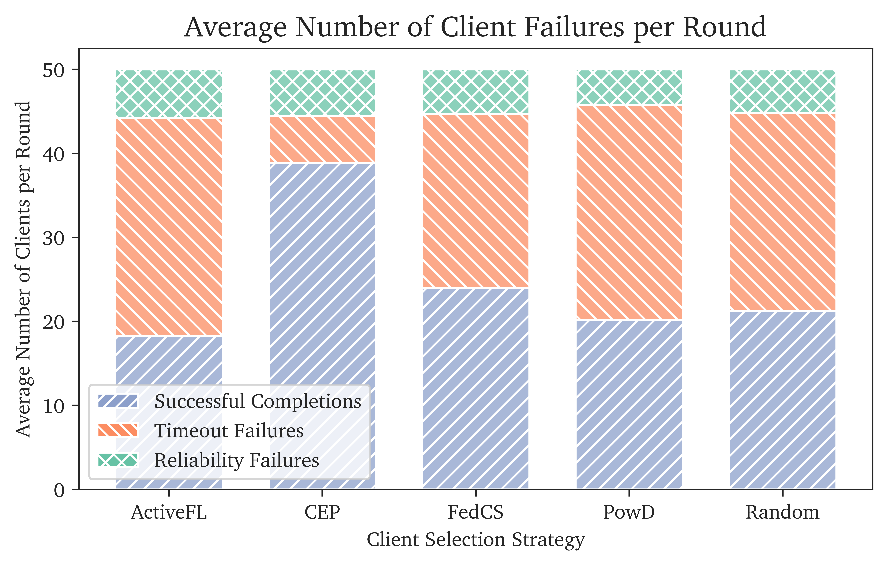

Training Failure Metrics
Imports
import pandas as pd
from os import listdir, getcwd
from os.path import isfile, join
import seaborn as sns
import matplotlib.pyplot as plt
import json
import numpy as np
import itertools
import matplotlib.patches as mpatches
pd.options.mode.chained_assignment = None # default='warn'
Data Import
This notebook can be used to compute and average results across multiple runs, simply adapt the run_folders.
dfs = []
for folder in run_folders:
run_folder = folder + "/client_output/"
file_list = [f for f in listdir(run_folder) if isfile(join(run_folder, f))]
print("Loaded", file_list, "from", run_folder)
for i in range(len(file_list)):
file_dfs = []
with open(run_folder + file_list[i]) as f:
for line in f.readlines():
json_data = pd.json_normalize(json.loads(line))
file_dfs.append(json_data)
file_df = pd.concat(file_dfs)
file_df["src"] = file_list[i].replace(".json", "")
file_df["run"] = folder
dfs.append(file_df)
df = pd.concat(dfs)
Loaded ['Random.json', 'FedCS.json', 'ActiveFL.json', 'PowD.json', 'CEP.json'] from run_1/client_output/
Dataset Preparation
DataFrame Preview
| server_round | client_name | actual_execution_time | execution_time | upload_time | total_time | status | current_timestamp | state.cpu | state.ram | ... | state.performance_tier | state.expected_execution_time | state.i_performance_factor | state.client_name | train_output.accuracy | train_output.avg_epoch_loss | train_output.no_samples | reason | src | run | |
|---|---|---|---|---|---|---|---|---|---|---|---|---|---|---|---|---|---|---|---|---|---|
| 0 | 1 | slow-sump | NaN | 88.0 | 49.450109 | 120.000000 | fail | 2023-08-11 16:04:18.782893 | 8 | 32 | ... | 2 | 80 | 1.10 | slow-sump | NaN | NaN | NaN | timeout failure | Random | run_1 |
| 0 | 10 | level-platform | 1.203034 | 92.0 | 14.012158 | 106.012158 | success | 2023-08-11 17:53:05.487195 | 8 | 32 | ... | 2 | 80 | 1.15 | level-platform | [0.44468546637744033, 0.7613882863340564, 0.91... | [0.05063865914003451, 0.025299487623371943, 0.... | 15.0 | success | ActiveFL | run_1 |
2 rows × 22 columns
Generate average failures per round table
df_gen = df[['server_round', 'src', 'run', 'reason']]
df_gen = df_gen.groupby(['src', 'reason', 'run']).count()
df_gen['server_round'] = df_gen['server_round'] / 30
df_gen = df_gen.groupby(['src', 'reason']).mean().reset_index()
df_gen = df_gen.pivot_table(index="src",columns="reason", values="server_round").reset_index()
df_gen['Total Failures'] = df_gen['reliability failure'] + df_gen['timeout failure']
df_gen['Total Clients'] = df_gen['Total Failures'] + df_gen['success']
df_gen['Total Clients'] = df_gen['Total Clients'].astype(int)
df_gen.columns = ['Strategy', 'Reliability Failures', 'Successful Participations', 'Timeout Failures', 'Total Failures', 'Total Clients']
cols = ['Strategy', 'Successful Participations', 'Reliability Failures', 'Timeout Failures', 'Total Failures', 'Total Clients']
df_gen = df_gen[cols]
df_gen
# df_gen.to_latex('mean_failures_per_round.tex',
# formatters={"name": "{:.2f}".format},
# float_format="{:.2f}".format,
# index=None)
| Strategy | Successful Participations | Reliability Failures | Timeout Failures | Total Failures | Total Clients | |
|---|---|---|---|---|---|---|
| 0 | ActiveFL | 18.233333 | 5.800000 | 25.966667 | 31.766667 | 50 |
| 1 | CEP | 38.833333 | 5.566667 | 5.600000 | 11.166667 | 50 |
| 2 | FedCS | 24.000000 | 5.333333 | 20.666667 | 26.000000 | 50 |
| 3 | PowD | 20.166667 | 4.266667 | 25.566667 | 29.833333 | 50 |
| 4 | Random | 21.266667 | 5.233333 | 23.500000 | 28.733333 | 50 |
Failures per Round Diagram
nice_name_map = {'reliability failure': 'Reliability Failure', 'timeout failure':'Timeout', 'success': 'Successful Completion'}
df_gen = df[['server_round', 'src', 'run', 'reason']]
df_gen['reason'] = df_gen['reason'].apply(lambda x: nice_name_map[x])
df_gen = df_gen.groupby(['src', 'reason', 'run']).count()
df_gen['server_round'] = df_gen['server_round'] / len(df['server_round'].unique())
df_gen = df_gen.groupby(['src', 'reason']).mean().reset_index()
df_gen['Status'] = pd.Categorical(df_gen['reason'], ['Reliability Failure', 'Timeout', 'Successful Completion'])
df_gen
| src | reason | server_round | Status | |
|---|---|---|---|---|
| 0 | ActiveFL | Reliability Failure | 5.800000 | Reliability Failure |
| 1 | ActiveFL | Successful Completion | 18.233333 | Successful Completion |
| 2 | ActiveFL | Timeout | 25.966667 | Timeout |
| 3 | CEP | Reliability Failure | 5.566667 | Reliability Failure |
| 4 | CEP | Successful Completion | 38.833333 | Successful Completion |
| 5 | CEP | Timeout | 5.600000 | Timeout |
| 6 | FedCS | Reliability Failure | 5.333333 | Reliability Failure |
| 7 | FedCS | Successful Completion | 24.000000 | Successful Completion |
| 8 | FedCS | Timeout | 20.666667 | Timeout |
| 9 | PowD | Reliability Failure | 4.266667 | Reliability Failure |
| 10 | PowD | Successful Completion | 20.166667 | Successful Completion |
| 11 | PowD | Timeout | 25.566667 | Timeout |
| 12 | Random | Reliability Failure | 5.233333 | Reliability Failure |
| 13 | Random | Successful Completion | 21.266667 | Successful Completion |
| 14 | Random | Timeout | 23.500000 | Timeout |
plt.figure(figsize=(7,4), dpi=1200)
sns.set_style("ticks")
plt.rcParams['font.family'] = "serif"
plt.rcParams['font.serif'] = "Charter"
ax = sns.histplot(x = 'src', hue = 'Status',multiple = 'stack', weights="server_round", data=df_gen,shrink = 0.7, palette="Set2")
ax.set_xlabel("Client Selection Strategy")
ax.set_ylabel("Average Number of Clients per Round")
no_status = 5
hatches = itertools.cycle(['///', '\\\\\\', 'XXX'])
for i, bar in enumerate(ax.patches):
if i % no_status == 0:
hatch = next(hatches)
bar.set_hatch(hatch)
colors = sns.color_palette("Set2")
circ1 = mpatches.Patch(facecolor=colors[2], hatch='////',label='Successful Completions')
circ2= mpatches.Patch(facecolor=colors[1], hatch=r'\\\\',label='Timeout Failures')
circ3 = mpatches.Patch(facecolor=colors[0], hatch='XXX',label='Reliability Failures')
ax.legend(handles = [circ1,circ2,circ3],loc=0)
ax.set_title("Average Number of Client Failures per Round", fontsize='x-large')
plt.show()
